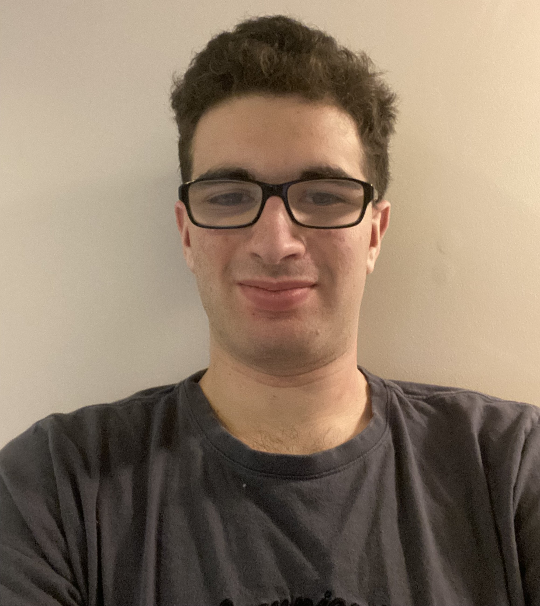
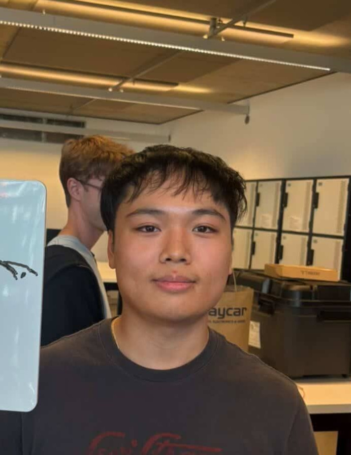
This project implements two AI agents working together to navigate a simulated race track. The track will be populated with additional track signs: SLOW, GO, STOP to direct the car to slow down at upcoming bends/curves, accelerate on straight sections and finally stop at the end of the lap respectively.
The system achieves this by separating perception and control as two different agents. The perception agent is built on YOLOv8 and trained on a custom dataset of ~700 images to identify the sign type,and determine their position within the environment from the car's camera. The driving agent utilises PPO reinforcement learning, which takes lidar, pose, and velocity as inputs and outputs steering angle and target speed through a custom wrapper that converts PPO actions into Racecar Gym controls.
The driving agent is rewarded for progress, wall clearance, cornering and collision avoidance while still adhering to behaviours signified by detected sign type.
To develop a system involving PPO, a purpose built environment is effrectively required. The Gymnasium simulator was chosen for its simplicty, especially in the coding options. For the environment itself, several options were considered, including the Simple Driving environment from Quiz 2, and building a full racetrack from scratch. In the end however, the racecar_gym environment by axelbr was chosen.
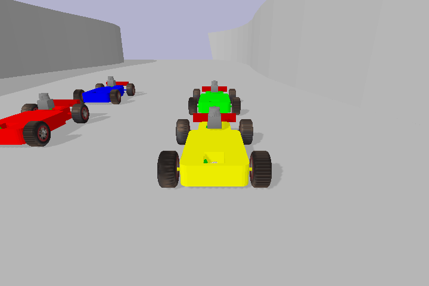
A sample of the racecar_gym environment
While several other similar environments exist, racecar_gym has some key advantages:
For these above reasons, the racecar_gym environment was selected.
From the available tracks, the Austria track was chosen. It is based on the Austria track developed for F1Tenth. The several sharp turns and significant lentgh makes it ideal for testing our model and ensuring there is significant difficulty in this project
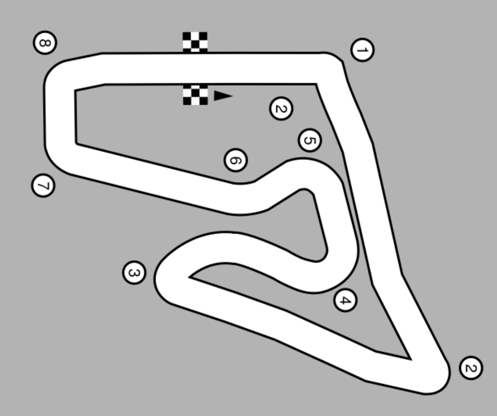
The outline of the Austria track being used
When building Reinforcement Learning (RL) pipelines, a massive structural gap often exists between the raw output of a physics simulator and the input expectations of mathematical RL algorithms like Proximal Policy Optimization (PPO).
In this project, using the raw racecar_gym environment presented three distinct architectural roadblocks:
To maintain clean, modular, and reusable code, this pipeline leverages the Decorator/Wrapper architectural pattern natively supported by the Gymnasium API.
Instead of hacking the core simulator physics, the environment is encapsulated inside a custom middleware layer. This proxy architecture intercepts, modifies, and reformats data moving between the agent and the simulation engine in real-time.
This wrapper design choice provided two crucial software engineering benefits:
The core software component developed for this pipeline is the CustomRacecarWrapper. It actively manages two critical operational phases of the RL loop: Observation
Vectorization and Algorithmic Reward Shaping.
The raw environment provides a multi-tier dictionary space. The custom wrapper intercepts this structure during every reset() and step() execution to process it:
(1080,), spatial coordinates/orientation vectors (6,), and linear/angular
velocity data (6,) while stripping away unused metadata like simulation runtime steps.(1092,).observation_space property with a new gym.spaces.Box structure,
satisfying Stable-Baselines3 integrity checks perfectly before training kicks off.Because PPO relies heavily on stable, continuous reward signals to converge, the wrapper overwrites the environment's default step values with a tailored incentive structure:
terminated state and info packet. If a collision is flagged by the PyBullet engine,
a massive negative penalty (e.g., -100.0) is injected, forcing the policy to heavily prioritize crash avoidance.Architectural Impact: By utilizing Gymnasium wrappers, the training pipeline treats the complex simulation engine entirely as a black box. This abstraction layer reduced state complexity via sensor isolation, aligned agent incentives through custom reward feedback, and permitted seamless integration with enterprise-grade RL frameworks.
To train a robust object detection model for autonomous navigation within the simulated environment, a custom dataset was created consisting of the three sign classes: ‘STOP’, ‘SLOW’, and ‘GO’. With a total of approximately 600 sign images, and additional 100 random background images and respective labels, the dataset was created with the intention to ensure the YOLO model could reliably detect signs regardless of the vehicle’s position and movement. This reflects the scenario of a racecar navigating around a racetrack, where paths, speeds and signs all vary from run to run.
Go Sign
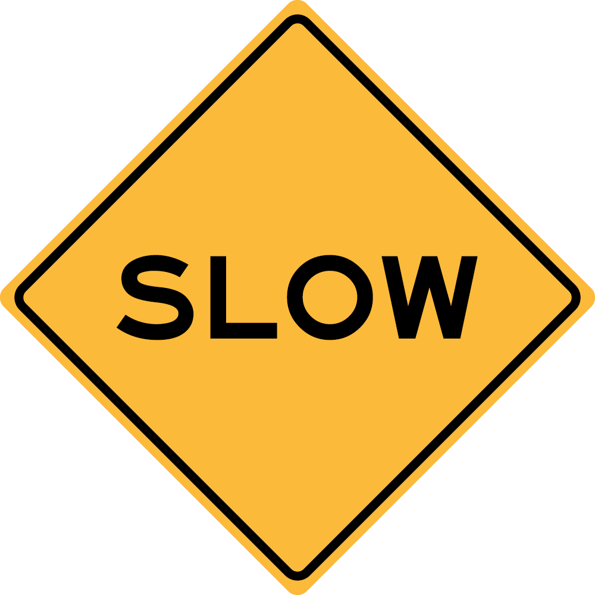
Slow Sign
Stop Sign
Dataset images were generated by first creating the texture/graphic of the signs before placing them on a plane in Blender, a 3D modelling and animation software, and extruding. This was placed in an empty environment to mirror the track environment, which consists of plain walls. To capture the different perspectives during car motion, 4 camera arc paths were designed for the camera to follow. These were positioned at different heights and distances from the signs, simulating various angles and ranges that the camera may capture during motion.
Sign Capture Animation
To capture each image and generate their respective label, Blender’s python scripting was utilised. The script will capture an image each step of the arc animation from the cameras perspective, where each arc was separated into 50 steps resulting in 200 images per sign. The script will then save the image with the following format [frame]_[sign].png (e.g. 0001_Go.png).
Labels were generated concurrently with the images. So, with each image capture, the script will also create a label following the format on Ultralytics website which specifies sign ID and bounding box coordinates (x, y, width, height). To do so the script extracts the 3D corners of the sign model in world coordinates and transforms them into 2D image coordinates using in-built functions on Blender.
In summary, for each frame captured: it will identify the sign in the scene, extract 3D bounding box corners, project these onto the 2D image plane using the camera view parameters, compute the bounding box and normalise the image pixel coordinates required for YOLO's label format. In addition, images of blank backgrounds of sign colours (100 images) was used to ensure yolo was not just identifying the colour as the determinant for sign ids. The respective labels for these were empty files.
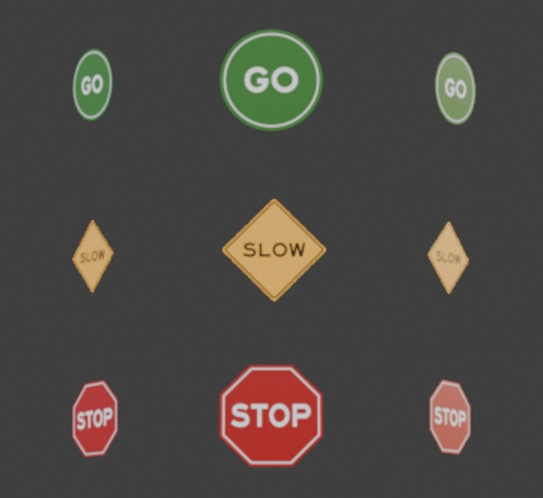
All Signs from Centre and Extreme Angle views
The signs were distributed evenly to reduce the possibility of class imbalance during training. This means that the model can detect signs without a bias towards one class. The purpose of the arcs with different distances and heights is to provide the model with a range of perspectives of the sign to make it more robust. Given the scenario of a race track, signs can appear at different locations and can be viewed from different orientations, such as straight on or from an angle. As such, simulating these conditions during training will allow the camera to consistently detect the signs even in motion and during tight turns.
The sign detection system is built on YOLOv8 (You Only Look Once, version 8) a CNN architecture used for object detection. This was selected due to its ability to detect in real time which is necessary for sign detections during car motion, its balance in detection accuracy and inference speed suits the need to react to identified signs. This was trained to detect the three sign types STOP, SLOW, GO from the race car’s camera feed.
The nano variant was selected as this was the fastest variant, which aligns most with our purpose. However, among the models it has the lowest accuracy, but given the simple task and controlled environment, this was an acceptable trade-off.
Transfer learning was then applied with the custom dataset, allowing the model to reuse learnt features from the COCO dataset and transfer this knowledge to serve the sign detection purpose.
The model was trained with the following parameters:
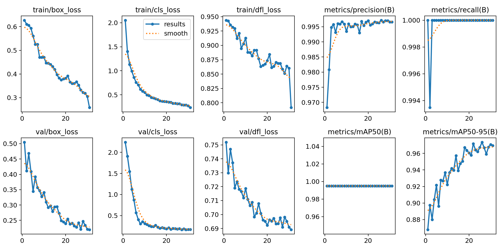
Training and validation loss curves alongside precision and recall metrics across epochs
The model was trained and subsequently validated using Ultralytics’ built-in validation functions and metrics. This includes mAP50 (Mean Average Precision at Intersection Over Union threshold 0.5), which measures how well the model detects objects by counting success when the bounding box overlaps at least 50% of the ground truth. Across all three classes, the model achieved a mAP50 of 0.955, precision of 0.997 and recall of 1, demonstrating ability to detect all avaiable signs in scene and no misclassifications between sign types.
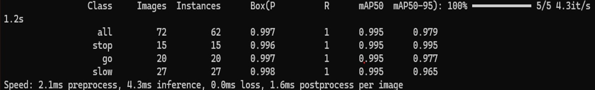
Validation metrics showing mAP50 of 0.995, precision of 0.997 and recall of 1.0 across all classes
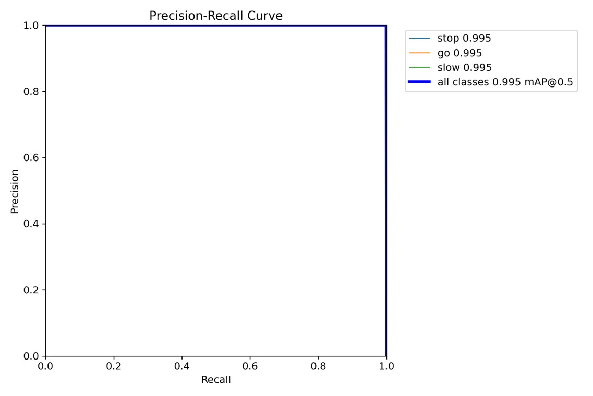
Precision-Recall curve
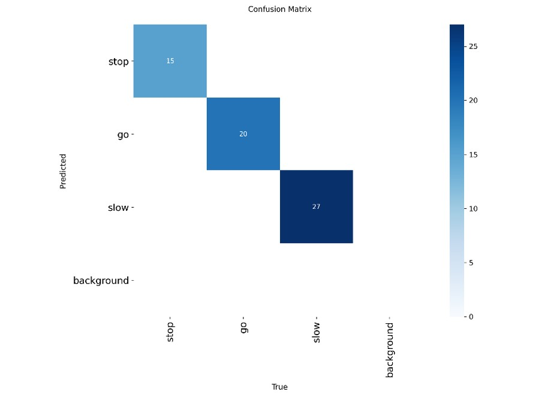
Confusion matrix (showing zero misclassifications across all sign classes)
The driving agent was trained using Proximal Policy Optimisation (PPO) from Stable-Baselines3. PPO was selected because it is well suited to continuous control tasks, where the policy must repeatedly choose smooth steering and speed commands while reacting to changing track conditions. In this project, PPO controls the car in the Austria Racecar Gym environment while the YOLO model provides the perception layer for interpreting track signs.
A custom Gymnasium wrapper was developed to convert Racecar Gym into a PPO-friendly training problem. The wrapper turns the simulator's structured observations into a single numerical observation vector made from LiDAR readings, pose, velocity and two derived track features: turn urgency and left-right track asymmetry. The PPO action space is reduced to two continuous values: target speed and steering. These are then converted back into Racecar Gym's actuator commands for speed, motor and steering.
The reward function was shaped around the behaviours required for autonomous racing. The agent is rewarded for forward lap progress, maintaining clearance from walls, choosing steering that aligns with detected turns and keeping smooth actions between steps. It is penalised for stopping unnecessarily, driving too close to walls, steering too aggressively at high speed, travelling the wrong way and crashing. Additional speed limits from LiDAR and hand-coded racing-line guidance were used around tight Austria hairpins so the model could learn to brake before sharp turns rather than only reacting when a wall was directly in front of the car.
track.yml scenarioThe final model was saved as a trained PPO policy and evaluated with a separate test script that renders the simulation, reports lap progress and prints reward/debug information. The Racecar Gym steering multiplier was also increased to improve steering authority through the tight turns on the Austria circuit.
Initial PPO training produced a policy that could drive along straight sections of the track, but it crashed on tight hairpin turns. To diagnose this, debug logs were added for LiDAR sectors, turn urgency, raw versus applied actions, target speed and actual joint steering angle. These logs showed that the car was not slowing enough before corners and that the original steering range was too limited for the Austria track.
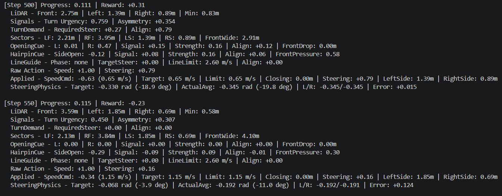
After tuning the speed limits, reward function and steering multiplier, reward and episode length improved during training. The current PPO-only policy can consistently complete a lap, with the simulation ending once the lap is finished. The TensorBoard results show increasing reward and episode length during training, with reward settling at approximately 600.
PPO point-of-view lap completion from the car camera
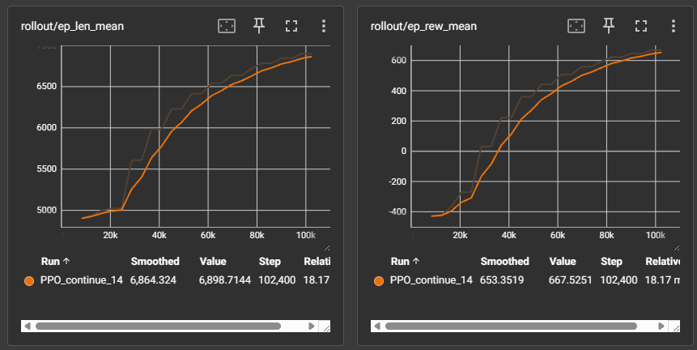
To implement the sign detection within the PPO driving agent, the observation size was first expanded from 1094 to 1102. The expanded size allows the model to:
The detections were then filtered so only the detection with the highest confidence is used by the model. The above detection features were then extracted and saved to a global detection variable. The detection for the previous step is used influence the reward of each current step. A smalll reward or penalty is given in response to how the target speed changes upon detection of the GO and SLOW signs. However, a large penalty is applied if the target speed does not drop below 0.1 in response to the STOP sign; similarly, a large reward is given if it does.
Overall, the detections struggle running from the car camera. It is common for a false positive STOP sign to be detected during the lap around the track; additionally, the detection rarely detects the slow sign. These detection issues are likely due to the similarity colour-wise of the signs, combined with the fact that the signs in the enviroment do not match the training set in shape or angle. As seen in the video:
PPO point-of-view lap completion from the car camera with detection window
The increased observation size contributes to the difficulty of training, meaning that the training time was increased dramatically compared to the base PPO model. Despite this, the model only converged at a reward of about 0 (seen below) and the model is not able to complete a full lap of the track.
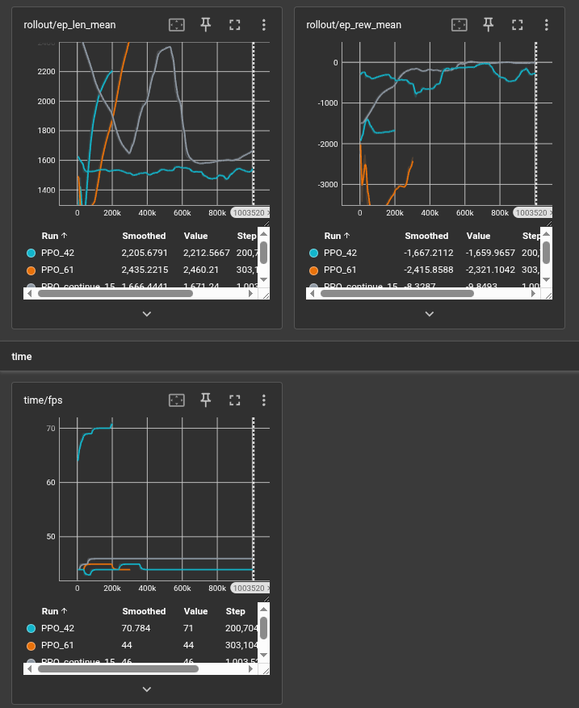